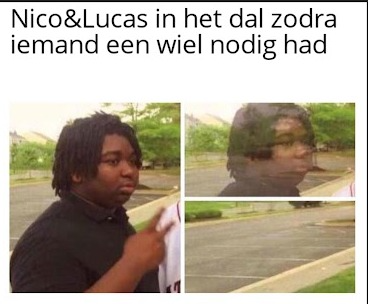

De maand begon internationaal met veel fietsritten in Frankrijk, maar ook in Italië werd er een rit gespot. Ook de kilometers liepen vlot binnen — een Gino-curve zou er de eerste twee weken niet echt bevoordeeld hebben uitgezien. Dit is echter slechts een kleine steekproef in een seizoen met ups-and-downs, verschillende kalenders en verschillende doelen bij een slecht gediversifieerde ploeg à la Alpecin-Deceuninck, die het naar eigen zeggen vrij tot zeer goed doet met de middelen die ze heeft (−30 euro).
Want over de hele maand werden er ritten genoteerd van (bijna?) elke Saloncoureur — niet slecht voor een vakantiemaand. ECHTER, het is NU de periode om uw kilometerstand aangenaam aan te dikken.
Nu is het nog één à twee maanden goed weer, en het seizoen om als Saloncoureur buiten te komen en onze kleuren te vertegenwoordigen op de weg én op het terras. Vamos Saloncoureurs.
De Saloncoureurs staan nog allerminst gekend voor hun sterke prestaties als peloton — dit bleek nogmaals op hoogtestage.
